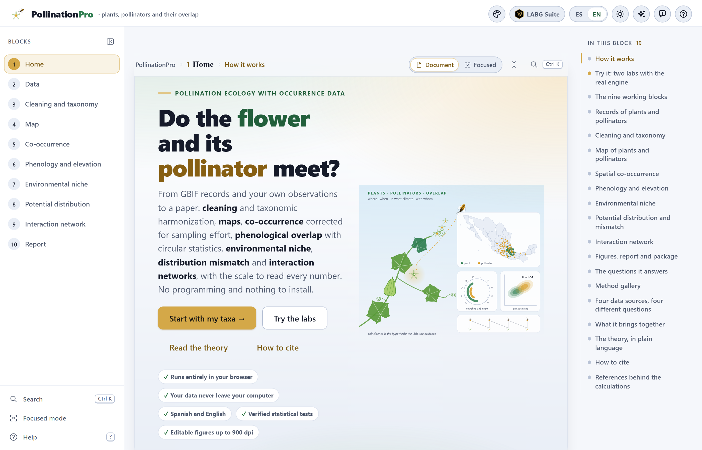

This is the concept DOI on Zenodo: it always resolves to the latest version. The citation of the program is the one given by the Copy the citation button on the app’s home page. Online: luisangelbg.github.io/PollinationPro.
PollinationPro runs entirely inside your browser. Your presence records, your visit observations and your climate layers are read on your computer and are never sent to any server. Only when you ask for it does the program query two public services —GBIF, for the names and the records, and a public database of biotic interactions— and whatever they return stays on your machine. Everything else works without the internet.
The illustrations, diagrams and screenshots in this manual are original: they were generated with the program itself or with code written for the manual. All the results shown come from the practice study included with the program —“Cucurbits and squash bees”— and from its practice environmental layers. Both are fictitious: the taxon names are real so that the example reads like a study, but no point, date, visit count or climate value reproduces an observation, and the app says so every time they are loaded. They must not be cited or used to conclude anything about those species.
The manual follows the same order as the app: ten numbered blocks that run from top to bottom in the Blocks list on the left. Each chapter explains one block and carries its number —Chapter 5 is Block 5, and its sections, figures and tables are numbered 5.1, 5.2…—. Each one begins with the ecological idea the block needs, goes on to what the screen calculates and how to read it, and ends with the warnings the block can show and what to do about them. This introduction has no number: its sections run I.1, I.2…
The block’s color appears on the opening page of its chapter, on the number of each section, on the tab at the edge of the page and in the table of contents, and it is the same as in the strip on the cover and in the app.
| Block | Name in the app | What it does |
|---|---|---|
| 1 | Home | Home page, two labs that calculate with the real engine, twenty methods, the theory in plain language and the 60 references |
| 2 | Data | The study list, the GBIF records by country, the published interactions, your presence and visit records, and the practice data |
| 3 | Cleaning and taxonomy | Fifteen quality rules, cultivated plants decided plant by plant, study area, synonyms, units of analysis and the sentence for the methods |
| 4 | Map | A map studio that works offline: its own vector base map, framing and clipping, north arrow, scale, legend, heat or grids, styles and export up to GeoTIFF |
| 5 | Co-occurrence | Veech’s exact test with a target-group universe, the distance to the nearest visitor against a null model, and range overlap |
| 6 | Phenology and elevation | Circular statistics of the dates, phenogram, circular rose, month-by-month overlap corrected for effort, and the elevational distribution |
| 7 | Environmental niche | Your layers (or the practice ones), the principal-component space, Schoener’s D, the equivalency and similarity tests, and the analysis by variable |
| 8 | Potential distribution | Three suitability models with cross-validation, the map of the plant with and without a potential visitor, and the same map with future climate |
| 9 | Interaction network | The plant–visitor network of the recorded visits: connectance, nestedness, specialization, modules, null models and sampling completeness |
| 10 | Report | The figure catalog up to 900 dpi, the report with the methods written out, and the .zip package that reproduces the study |
Clarifications and practical tips that save time.
What can change your conclusions if overlooked.
The idea behind a calculation, without unnecessary formulas.
A case worked step by step with the program’s practice data.
| If the result falls in this case… | then this is the recommended reading. |
These are guides for interpretation, not laws: what you know about the plant, the visitor and the sampling always comes first.
| Written like this | Means |
|---|---|
| Clean and apply | A button, checkbox or menu of the app, with its text as it appears on screen in English. |
| Block 4›Export | A path: open the first item and look for the second inside it. |
decimalLatitude, .csv | A column name, a file name or a value typed as it stands. |
| Sechium edule, Xenoglossa | Scientific names, in italics; the app also writes them this way in tables, legends and figures. |
| plant · visitor · unit | The two roles in the study list, and the unit of analysis: a species or an entry of the list (a whole genus, for example), as chosen in Block 3. |
| SES · D · R̄ · AUC · TSS · NODF · H₂′ | The abbreviations and symbols of the indices; each one is defined the first time it appears, and the glossary (Appendix C) gathers them. |
| 1,856 records · 0.25° · Sep 5 | Thousands with a comma and decimals with a point, cells in degrees, dates with the abbreviated month and the day, as in the app. In its own text the manual writes the percent sign without a space (29%); where it quotes the screen, it writes it as the app shows it (29 %). |
What the program is, which questions of pollination ecology it answers with occurrence data, which data it accepts and how to work through it from start to finish. It includes the five ideas that support everything else —coinciding is not pollinating, the record reflects the recorder, the year is a circle, the niche is compared in the environment and the visit is the evidence— and an honest list of what the program does not do.
PollinationPro is a platform for taking a study of plants and their flower visitors from occurrence records to the paper: it gathers the GBIF records, the interactions already published and your own observations; it cleans them and harmonizes their taxonomy; it puts them on a map; it measures whether the plant and the visitor coincide in space more than chance predicts, whether they fly and flower in the same months and at the same elevation, whether they share the same climate and where the plant could be left without any potential visitor, today and with future climate; it analyzes the network of recorded visits; and it delivers a report with figures, methods written out and a package that reproduces it.
It works for any crop —vegetables, fruit trees, coffee, cocoa, cucurbits, oilseeds—, for its wild relatives and for any native plant, with any group of visitors: bees, bumblebees, stingless bees, flies, butterflies, bats or birds. Everything happens inside the browser: there is nothing to install and no need to know how to program. It is written for botanists, entomologists and thesis students who know that most records of a crop are of planted individuals, that bee taxonomy changes, that records pile up where there are roads, and that a reviewer will strike out the sentence “it is its pollinator because their distributions overlap”.
Each block answers a question that a pollination study with occurrence data really asks. Here they are, in the order in which they are worked through:
| Block | The question | What answers it |
|---|---|---|
| 2 | What has been published about my plants and their visitors? How many records do I have, and where from? | Names resolved in GBIF, records by country, published interactions in both directions, and your imported data |
| 3 | Which records are errors? Am I studying the crop or its wild populations? What is each taxon called today? | Fifteen rules with their counts, cultivated plants plant by plant, synonyms and the sentence for the methods |
| 4 | Where are they? Which states have no records? | The editable map and the tables by state and by country |
| 5 | Do they coincide in the territory more than chance predicts, once where sampling took place is accounted for? | Veech’s exact test with a target-group universe, sensitivity to cell size, nearest neighbor and hulls |
| 6 | Does the visitor fly when the plant flowers, and at the same elevation? | Mean date and concentration of each, Rayleigh, Watson–Williams, Schoener’s D month by month, and elevational profiles |
| 7 | Do they live in the same climates? Which variable sets them apart? | The environmental space, D and I, equivalency and similarity, and the overlap by variable |
| 8 | Where is the plant suitable and no visitor is? What will happen with future climate? | Validated suitability models, the mismatch map and how it changes with future layers |
| 9 | How specialized is the relationship? Which visitors are key? How many remain unrecorded? | Connectance, NODF, H₂′, d′, modules against null models, strength and completeness |
| 10 | How do I hand it in, in a thesis or a paper? | Figures in whatever format is requested, a report with methods written out and references, and a reproducible package |
You do not need to be a specialist in pollination ecology to use the app, but five ideas come back again and again. Understanding them turns the results from numbers into arguments.
For an insect to pollinate a plant it has to be where the plant is, when the plant flowers, in environments both tolerate; it has to visit the flower and, in doing so, carry and deposit compatible pollen. Presence records inform the first three links; visit observations, the fourth; the fifth can only be proven in the field. That is why Blocks 5 to 8 speak of opportunity for interaction and of potential pollinators, and only Block 9 speaks of interactions. A paper with occurrence data is valuable precisely because it narrows down where, when and in what climate the field evidence is worth looking for.
GBIF records pile up near roads, cities, universities and research stations. If the plant and the bee were recorded more where more sampling took place, their records will coincide even if in nature they do not seek each other. Every test in the app that compares an observed value with an expected one does so within the target group: the cells, the months or the environmental background where someone recorded something from the study, which are the ones that were really sampled. The first lab of Block 1 shows, with a landscape whose truth is known, what happens when this is not done.
31 December and 1 January are one day apart, not 364. A species that flowers from November to February has its peak in December–January, not in June as the arithmetic mean of the months would say. That is why dates are read with circular statistics: each date is an angle, the mean date is the direction of the average vector, and its length R̄, from 0 to 1, says how concentrated the season is.
Two species can live in different places and share a climate, or live close by and use different environments. Block 7 compares them in environmental space —the first two principal components of the region’s climatic variables—, corrects for what the environment offers and asks whether the niches are identical (equivalency) or more alike than the mere likeness of the available environments would produce (similarity). Block 8 takes that suitability back to the map.
The network of Block 9 is built not from coincidences but from observed visits: yours or published ones. And a network is always incomplete: how many visitors remain unrecorded is estimated with the rarefaction curve and with Chao1, and completeness tells you whether to go back to the field before claiming that a plant has few visitors.
.csv, .txt, .tsv, .xlsx or text pasted from a spreadsheet..tif) or ASCII grid (.asc), in degrees, for Blocks 7 and 8, and the same variables for a future scenario..json: the list, the records, the interactions and the visits, as they left Block 2..html file that opens in any browser and prints to PDF, with one section per calculated block, the methods written from what was actually run, the references for those methods, the GBIF datasets that must be cited and the calculation log..zip with the report, the project, the parameters, the tables and the figures. Whoever receives it can redo the study.Online, without downloading anything: open luisangelbg.github.io/PollinationPro in the browser; it is also in the catalog of the LABG Suite (luisangelbg.github.io). Everything is calculated on your computer just as in the local copy: your data are not uploaded anywhere.
On your computer: a computer with a recent browser —Edge, Chrome, Firefox or Safari from the last two or three years— and the program folder. There is no installation: copy the folder and open index.html with a double click. It works from a USB stick and, except for the GBIF download and the search for published interactions, without the internet.
The list, the records, the interactions and the visits are kept in the browser of that computer (in its local database), so that when you open the app again it shows “The previous session was recovered”. The options of each block, the map style and the changes made to each figure are also remembered. This is only a convenience: the real backup is the .json project of Block 2, which opens on any other machine. The environmental layers are not kept: they are chosen again in Block 7.

| Element | What it is for |
|---|---|
| The Blocks list and the In this block index | On the left, the ten blocks, always visible, with a ✓ on those that are finished; on the right, the sections of the open block. You can jump to any block at any time; a block that needs something that does not exist yet says so and offers the button to go and sort it out. |
| The cards | Each block is divided into numbered cards —“1 · The study list”, “2 · Bring the GBIF records”…— that are read from top to bottom: first what you choose, then what is calculated. |
| The result tiles | A row of large figures with their label and a line of context underneath. It is the summary of the card. |
| The ? sign | Next to a title, a figure or a column, it opens a help sheet: what it measures, how to read it, the scale that says whether the value is low or high and the most common mistake, with its references. There are 50 sheets; each block ends with its 📖 Interpretation guide for this block, which gathers its own. |
| The scale labels | Next to many numbers there is a word in color —moderate, marked, acceptable, generalist—. It comes from the scale of the corresponding help sheet, applied to the value you have on screen. |
| The ⤓ and ✎ buttons of each figure | In the corner of every figure. ⤓ exports it (PNG, JPG or SVG, 150 to 900 dpi, light or dark). ✎ opens its six-tab editor: title, axes, series, legend, any text (rewritten, resized, recolored or hidden) and annotations (Section 10.3). |
| The figure studio | The palette button on the top bar. It changes the palette (nine, among them Okabe–Ito for color-blind readers and a grayscale one), the font, the scales and the background of all the figures at once, on screen and in what is exported. |
| Continue to … → | At the foot of each block. It takes you to the next one. |
| The messages | Colored bands under a card: blue or green for information, amber for a warning, red for an error that prevents going on. Each chapter ends with those of its block. |
Block 2 includes two practice studies that the program itself generates with a fixed seed, without querying the internet: “Cucurbits and squash bees” —five species of Sechium and the genus Cucurbita, with Xenoglossa, Peponapis and the honey bee, in Mexico— and “Coffee and stingless bees” —Coffea arabica with the honey bee and four stingless bees, in southern Mexico and Central America—. Each one comes with presence records and a table of visits. They are fictitious: the points are drawn around invented centers, the dates around invented peaks and the visits with Poisson counts; the names are real so that the example reads like a study. And they carry errors planted on purpose —duplicates, a (0, 0), swapped coordinates, a longitude without its sign, the centroid of Mexico, rounded coordinates, a future year, cultivated plants— so that Block 3 has something to find.
Block 7 also includes four practice environmental layers for Mexico and Central America at 0.1°: an invented relief and three climatic variables derived from it with simple rules (cooler with altitude and towards the north, rainier towards the southeast and on the Gulf slope), with the names of the bioclimatic variables BIO1, BIO4 and BIO12, and a warmer and drier practice future for Block 8. They look like a climate, but they are not one.
| In the practice study | Records | Its role in the manual |
|---|---|---|
| Sechium edule | 424 | The main plant: chayote, with 29% cultivated records |
| S. compositum, S. chinantlense, S. hintonii, S. mexicanum | 71 · 46 · 40 · 35 | The wild relatives, with small ranges |
| Cucurbita (genus) | 605 | The squashes, with 36% cultivated: the plant on which the squash bees depend |
| Xenoglossa and Peponapis | 106 · 216 | The squash bees, which Block 3 brings together under Xenoglossa |
| Apis mellifera | 705 | The honey bee: a generalist with a long season, for contrast |
| Visits at five sites | 354 rows | 953 visits by 11 visitors to 6 plants: the network of Block 9 |
The results in this manual —that chayote and Xenoglossa coincide at random in space, that they flower and fly 26 days apart, that the practice future reduces the suitable area by 62%— are properties of the invented data, not of the species. They are for learning to read the screen. Your real study starts with Resolve the names in GBIF.
All the results in the text were obtained by running the app with the practice study “Cucurbits and squash bees”, cleaned with the default values of Block 3, and —in Blocks 7 and 8— with the program’s practice layers; they were copied from the screen. If you repeat the steps, you should see the same numbers: the practice data are generated with a fixed seed. Only the randomization tests (the null models of Blocks 5, 7 and 9) may vary in the last decimal of a p-value from one run to the next.
The order of the blocks is the order in which a pollination paper with occurrence data is written. You do not have to do all of it: a study of distribution and phenology ends at Block 6; one of a visit network needs Blocks 2 and 9. Whatever a block needs from another it calculates on its own when you open it.
If you change the list or the records in Block 2, the cleaning is redone. If you change a rule, a synonym or the unit of analysis in Block 3 and apply again, everything below is recalculated when you open it —the map, the pairs, the calendars, the environmental space—. The report of Block 10 is written with whatever exists at that moment: that is why it is best generated at the end, and generated again if anything was touched.